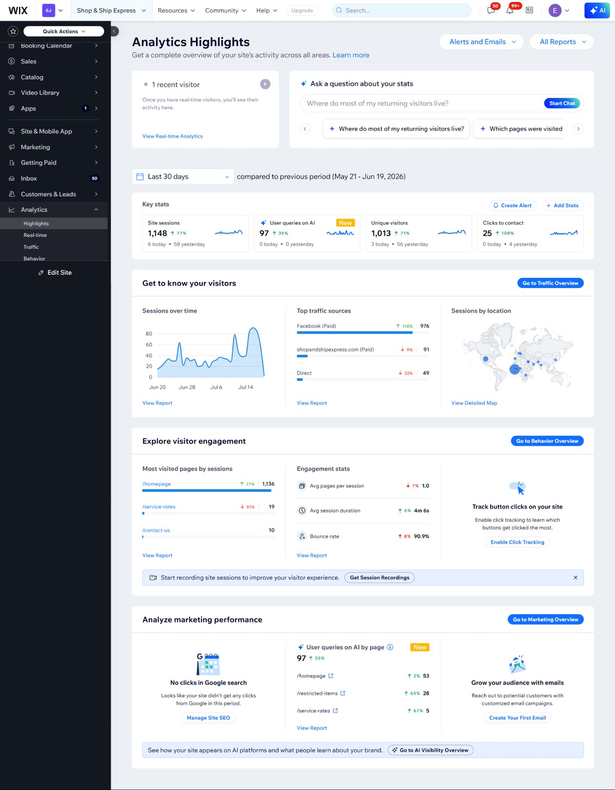

The challenge

← Back to Work
Analytics · Operations
Shop & Ship Express Analytics
Data only becomes useful when the person looking at it can tell what deserves attention next.
Platform usedAnalytics dashboard
Project typeAnalytics · Operations
The story behind the build
More data was never the goal. A clearer decision was.
Shop & Ship Express Analytics was about making website-performance signals easier to inspect together. A dashboard can show a lot of numbers and still fail if the person looking at it cannot tell what deserves attention.
I grouped related metrics around decisions, gave stronger signals more visual priority and reduced the need to move between disconnected views just to understand what changed.
The result is an operating view designed for repeated use, where the next question is easier to see.
What I changed
- Group related metrics instead of presenting a wall of numbers.
- Prioritize signals that can lead to an action.
- Use visual hierarchy to separate overview from detail.
- Keep the dashboard easy to scan repeatedly.
Where it ended